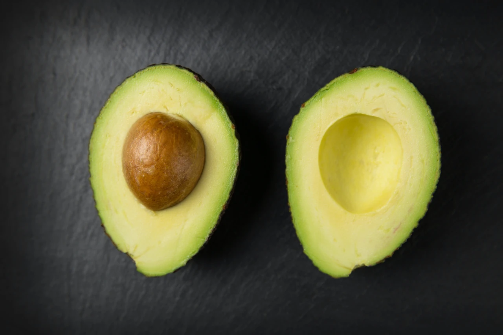

De waarheid over vetten en hun effect op je fysieke gezondheid
Ben jij ook zo in de war over de vele tegenstrijdige informatie rond vet in onze voeding? Het is een veelbesproken onderwerp, maar wat moeten we nu echt weten over vet? In dit artikel ontdek je de waarheid achter enkele mythes en leer je waarom vet onmisbaar is voor een gezonde voeding.

In deze blog leer je alles wat je moet weten over vetten. We bespreken de verschillende soorten vetten, de anabole effecten van vet, wat het verschil is tussen vrouwen en mannen wat betreft vetinname en waarom cholesterol zo belangrijk is. Aan het einde van deze blog geven we jou ook onze aanbevelingen mee zodat jij je vetinname kan optimaliseren en je geen spiermassa laat liggen.
Soorten vet
Als we het hebben over soorten vet, hebben we het voornamelijk over triglyceriden en hun componenten: vetzuren. Die triglyceriden kunnen verzadigd, enkelvoudig onverzadigd of meervoudig onverzadigd. De uitleg over het verschil tussen deze willen we graag simpel houden: ze hebben verschillende effecten op onze gezondheid en onze fysiek. Er zijn slecht twee essentiële vetzuren voor het lichaam. Er is niet zoiets als een essentieel koolhydraat maar er is wel zoiets als essentiële aminozuren of eiwitten en dus ook essentiële vetzuren. Dit zijn linolzuur oftewel LA, wat omega-6 is, en alfa-linolzuur oftewel ALA, wat omega-3 is. Het is niet zo lastig om binnen je dieet te verwerken. Je hebt 10 gram linolzuur en mogelijk zelfs minder dan 1 gram alfa-linolzuur. Als je ook maar enigszins een prima vetinname hebt, zou je daar makkelijk aan moeten voldoen.
Anabole effecten van vet
Ondanks dat je vetten moet eten om die essentiële vetzuren binnen te krijgen, zijn er nog meer redenen om vetten binnen je dieet te hebben. Vetten hebben namelijk ook een anabool effect. Ze lijken minstens net zo anabool te zijn als koolhydraten omdat ze simpelweg energie bevatten. De meeste studies stellen dat de koolhydraat:vet ratio geen invloed heeft op de stikstofbalans, wat een indicatie is van spiergroei. Echter geven sommige studies de voorkeur aan vet. Daaruit kunnen we concluderen dat het in ieder geval niet schadelijk is voor spiergroei om een hogere vetinname te hanteren.
Een verhoging van omega-6 inname zou kunnen lijden tot een verhoging van vetvrije massa in ongetrainde individuen.
Een verhoging van omega-3 inname daarentegen verbetert energieverbruik, verhoogt het vetverlies, verhoogt spiereiwitsynthese, verhoogt spiergroei, verlaagd inflammatie en verbetert de prestatie. Het is geen magisch effect, maar het effect is er wel.
Vrouwen vs. mannen
Een vetrijk dieet zou voor 15% meer verzadigend werken bij vrouwen. Vetten en koolhydraten hebben geen effect op verzadiging. Het gaat enkel om voedingsvolume. Vetten hebben uit zichzelf minder volume omdat ze simpelweg meer calorieën bevatten.
Vrouwen met een vetrijk dieet zouden een hoger energieverbruik, meer kracht en een lager vetpercentage hebben. Fysiologisch gezien is dit ook logisch aangezien vrouwen de neiging hebben meer vet, minder koolhydraten en minder eiwitten te verbranden dan mannen bij dezelfde trainingsintensiteit, omdat zij een glucose sparend metabolisme hebben. De behoefte aan koolhydraten is dus iets lager. Daarnaast heeft het ook invloed op de menstruatie.
Er zijn daarmee genoeg indicaties dat vrouwen meer baat kunnen hebben bij vetten dan mannen.
Cholesterol
Nog een reden om meer vetten te eten, is cholesterol. Vetten zijn de beste bron voor cholesterol, met name eieren en zuivel. Uit onderzoeken blijkt een verhoging van spiereiwitsynthese en vetvrije massa bij een hogere cholesterolconsumptie. Dit is dus ook waarom dat hele eieren beter de spiereiwitsynthese stimuleren dan eiwit, zelfs bij dezelfde eiwitinhoud.
Cholesterol is dan ook de voorloper van alle anabole hormonen, het kan spierherstel verbeteren door het gevolg van een lagere ontstekingswaarde en het zorgt voor anabole signalering waardoor het, zoals eerder gezegd, de spiereiwitsynthese stimuleert.
Veel mensen maken zich druk dat cholesterol een negatieve invloed heeft op de gezondheid. Er is geen reden om je daar druk over te maken. De cholesterolinname uit voeding wordt volledig gereguleerd door het lichaam. Als je geen cholesterol consumeert, dan produceert je lichaam haar eigen cholesterol in het bloed. Het bloed behoudt een vrij constante cholesterolwaarde. Bij sommige mensen lijkt een inname van cholesterol ook zorgt voor een toename van cholesterol. Maar dan is het wel zo dat LDL (het "slechte" cholesterol) en HDL (het "goede" cholesterol) in dezelfde verhouding stijgt. Er is dan ook geen relatie tussen cholesterolinname en cardiovasculaire gezondheidsrisico's.
Aanbevelingen
We raden aan om 20 tot 40% van je totale caloriebudget aan vetten te consumeren, afhankelijk van geslacht en koolhydraattolerantie. Mensen met overgewicht en vrouwen zullen beter richting die 40% gaan. Slanke mannen hebben wellicht al voldoende met 20%.
Omega-3 is iets waar we de focus op leggen. We raden 3 gram omega-3 (DHA + EPA) per dag aan. Dit kan je simpelweg suppleren of je moet elke dag 100 gram vette vis eten. Of 700 gram per week wanneer je bijvoorbeeld een keer per week sushi gaat eten.
Samenvattend
Als je enigszins een prima vetinname hebt, zou je makkelijk aan de essentiële vetzuren moeten voldoen. Ondanks dat je er makkelijk aan zou moeten voldoen, raden we toch aan om te focussen op omega-3 vanwege de anabole effecten.
Vrouwen kunnen meer baat hebben bij een hogere vetinname dan mannen. Niet onlogisch wanneer je weet dat het gezonde vetpercentage van een vrouw zo'n 10% hoger ligt dan dat van een man.
Je hoeft je geen zorgen te maken over de inname van cholesterol. Zoals je nu weet, regelt het lichaam de cholesterol in het bloed volledig zelf. Morgenochtend kan je dus zonder problemen (hele) eieren eten.
Wil je dit toepassen op jouw situatie?
In een intakegesprek bekijken we je doel en wat daar voor jou voor nodig is.